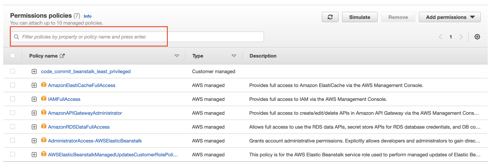
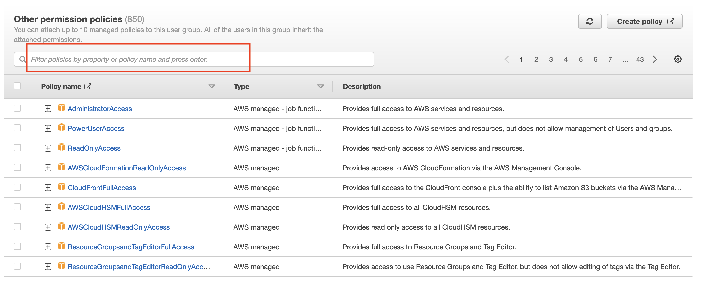

I've embarked this morning on my first serious AWS voyage. I've used a bunch of AWS services in the past, but unfortunately I never took the IAM piece seriously and skipped over it with a broad AWS-managed permission or two.
As I'd experienced in past attempts to wrangle with IAM, it was immediately difficult, and after the first five minutes of slogging through the docs I created my first support ticket. While signing up for a new AWS account today I did a little research about the support tiers and read some glowing reviews about it. I actually signed up for the "business" tier because it gives you phone and chat options as well as a one-hour guaranteed turnaround. (no, this isn't a sponsored post! 😝)
My First Ticket
I'd immediately gotten stuck in deploying my chess server to Elastic Beanstalk because of permissions errors, despite adding what I thought were a number of wide open (back to my old habits! 😊) AWS-managed policies. Part of my problem was that the error given in the console was utterly generic: "permission error" or something along those lines.
ChatGPT nudged me towards
the Elastic Beanstalk CLI, and when I used it to eb init Beanstalk in my local repo
it gave a more fine-grained error:
EB CLI does not have the right permissions to access CodeCommit. List of IAM policies needed by EB CLI, please configure and try again.
codecommit:CreateRepository
codecommit:CreateBranch
codecommit:GetRepository
codecommit:ListRepositories
codecommit:ListBranches
I only knew enough to search for permission groups with words resembling
these, and the only result from such a search ("codecommit")
in
https://us-east-1.console.aws.amazon.com/iamv2/home#/groups/details/<MY-GROUP-NAME>/attach-policies
yielded
AWSCodeCommitFullAccess
AWSCodeCommitPowerUser
AWSCodeCommitReadOnly
none of which quite fit the bill, as I realized after clicking into
their CloudFormation JSON: They were variously too wide open or missing
one or two needed permissions. Despite this, I did add the
AWSCodeCommitFullAccess permission to my role, but
surprisingly this didn't make the CLI error disappear.
The Support Call
I was pleased to receive a call from a nice person named Varun within 10 minutes after creating the ticket. The connection was great, and once we upgraded to a screenshare via Amazon Chime it was significantly better.
Varun asked me to replicate the error I was having while sharing my screen.
I couldn't! 😳
It turned out that I'd needed to wait a few extra seconds after granting the new permission before it took effect -- and maybe even longer when using the CLI, according to his experience -- and so technically I'd already resolved my own problem. Nonetheless, remember my preamble about wanting to do things properly?
Do The Right Thing
We took a step back and I replicated the initial error by revoking
AWSCodeCommitFullAccess. He then walked me through creating
a custom permission
here, which was relatively straightforward. To repeat a common complaint,
the UI/UX is not amazing on AWS; I appreciate minimalism, but IMO there
are some missing visual indicators, for example, to differentiate
between a search bar on existing permissions and one on
available ones (can you tell the difference??):


In any case, I added the missing permissions to a single custom one
named beanstalk_least_privileged and attached it to my
user.
Inching Closer
This nearly resolved the issue, as when I ran
eb init again, it walked me through its little
questionnaire (region: eu-central-1, environment: Python, Python version: 3.11,
etc.), at the end of which it said
Successfully created branch: trunk
Do you want to set up SSH for your instances?
(Y/n):
to which I gleefully tapped Y. However, once I got all the
way through the RSA key pair prompts, it blurted out the enigmatic
ERROR: NotAuthorizedError - Operation Denied. You are not authorized to perform this operation.
Encoded authorization failure message: <a bunch of gobbledygook>
If I were to try and resolve that "encoded authorization failure message" with the ensuing additional steps, I'd optimistically estimate that it would take me 30-60 minutes.
Instead, Arun set me on the right track in only a couple minutes with this command to decode the failure message:
$ aws sts decode-authorization-message --encoded-message <gobbledygook>
An error occurred (AccessDenied) when calling the DecodeAuthorizationMessage operation:
User: arn:aws:iam::904645255421:user/kindchess-admin is not authorized to perform:
sts:DecodeAuthorizationMessage because no identity-based policy allows the
sts:DecodeAuthorizationMessage action
Having added the DecodeAuthorizationMessage permission to
my user and re-running the
aws sts decode-authorization-message ... command, I got a
new error:
{'DecodedMessage': {'allowed': False,
'explicitDeny': False,
'matchedStatements': {'items': []},
'failures': {'items': []},
'context': {'principal': {'id': 'AIDA5FIIPED6WJ6CS3GOS',
'name': 'kindchess-admin',
'arn': 'arn:aws:iam::904645255421:user/kindchess-admin'},
'action': 'ec2:ImportKeyPair',
'resource': 'arn:aws:ec2:eu-central-1:904645255421:key-pair/aws-eb',
'conditions': {'items': [{'key': 'aws:Region',
'values': {'items': [{'value': 'eu-central-1'}]}},
{'key': 'aws:Service', 'values': {'items': [{'value': 'ec2'}]}},
{'key': 'aws:Resource',
'values': {'items': [{'value': 'key-pair/aws-eb'}]}},
{'key': 'aws:Type', 'values': {'items': [{'value': 'key-pair'}]}},
{'key': 'aws:Account', 'values': {'items': [{'value': '904645255421'}]}},
{'key': 'aws:ARN',
'values': {'items': [{'value': 'arn:aws:ec2:eu-central-1:904645255421:key-pair/aws-eb'}]}},
{'key': 'ec2:KeyPairName',
'values': {'items': [{'value': 'aws-eb'}]}}]}}}}
A new error is almost always an encouraging sign, right1?
The key piece of info in this data dump is that the
ec2:ImportKeyPair permission is missing. Having added that,
everything ran as expected! Whew.
Extra Wisdom From an AMA With Arun
Without any cajoling on my part, Arun stayed on the line with me while I threw a bunch of newbie IAM-related questions at him. That's when I got the "wait a few seconds, or even longer, to allow IAM changes to take effect" nugget.
I also asked him what sort of tools and abstractions small (1-10 people) groups are using, or should use: He said the console or the CLI should be sufficient. I told him about the "try to spin up cloud asset, get error, add new permission" cycle that I saw echoed on Hacker News, and he said this is more or less what he recommends.
Tools For Expedient IAM Generation
It's hard for me to accept this slow, iterative process for setting only the needed IAM permissions for a given application as the state of the art. A Google search yielded a handful of interesting-looking tools which seem like they could save a lot of time and trouble:
Policy Sentry from Salesforce
Aardvark from Netflix
repokid also from Netflix
These are in descending order of their most recent commit, Policy Sentry being the only one which has a 2023 commit so far. I'll reach for one of these if (when) this process becomes too onerous, and I've also got my eye on the Cloud Development Kit (CDK) and some of the abstractions built on top of it.
Trudging On
Wish me luck on the deployment! With any luck I'll have KindChess migrated to AWS today.
-
Incidentally, the error was displayed in ugly, backslash-filled, unformatted JSON, not the indented beauty seen above. Come on AWS! A little formatting never hurt anyone. 😢↩